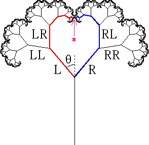

|  |
In the tree pictured above the branch tip marked * can be reached in two ways
LRRRRLRLRLRLRLR... = LR4(LR)infinity
and
RLLLLRLRLRLRLRL... = RL4(RL)infinity
Consequently, for both sequences, the corresponding branch tips have x-coordinate 0.
| With simple trigonometry these sequences are converted into geometric series, giving r as a function of q. |
| Here is a graph of the self-contacting r as a function of q. |
Return to Fractal Trees.